结论：创新低后马上被拉回 → 不算底背驰，走势只能界定为震荡，仍按弱势看待，仓位轻。 上证低开 3585.67 探至 3565.59（破 11/16 低与 60 日低 3574.27）后拉回 3599.63（-0.08%）； 昨日上午高点 3623.12 未翻过（差 21.05 点），短线止跌未确认。半导体领涨（+2.07%）但按弱势处理， AI视频/传媒 -6.95%（跌停 9 只）已走弱。11 只标的全部无方法买点。
老师三个判据逐条对上：① 低开后探底回升、盘中创短期新低 —— 开 3585.67 低于昨收 3602.57，探至 3565.59 后拉回 3599.63，低点既破 11/16 的 3586.57，也破 60 日低 3574.27；② 昨日上午高点 3623 是短线止跌的门槛 —— 今日最高 3602.07，差 21.05 点没翻过去，短线止跌不成立；③ 3750 差 147.93 点（4.11%），远门槛。
按老师自己的判据推演：创出新低后马上被拉回，不属于底背驰，因此当前位置不能判断底背驰出现，走势只能界定为震荡、先看成短期低点，不给阶段低点判断 —— 今天日内形态（探低 +0.95% 拉回）正好就是这个结论的实证。风险是「在前低点附近做 2–3 天弱势震荡，这种震荡属于没有止跌的表现」。
结构上是权重弱、成长分化：科创50 +2.29%（中芯 +7.87%）、中证500 +0.88%，创业板 -0.23% 且最低 2284.56 再创 60 日新低。量能上，11:30 两市 8,946 亿 vs 昨日同时点 9,006 亿（-0.66%，基本持平），13:2x 累计 10,083 亿。
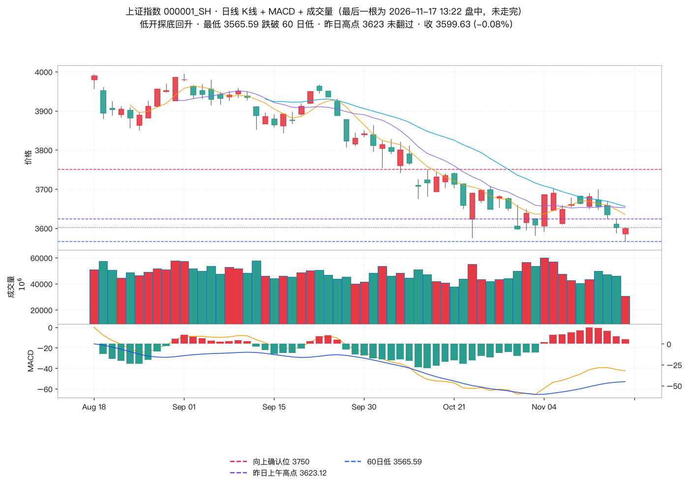
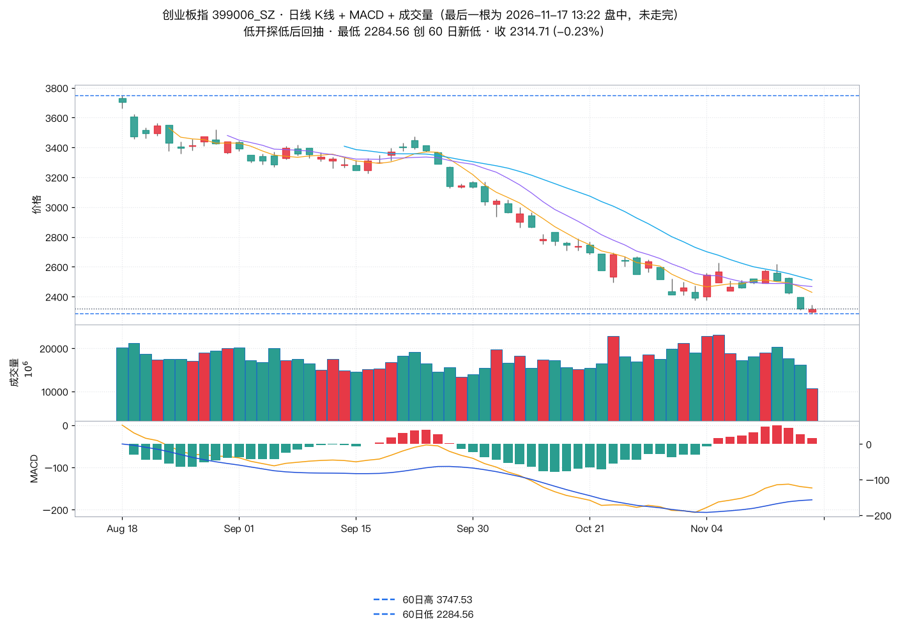
| 方向（自建篮子） | 老师口径 | 实测（均值 · 涨跌家数 · 个股） |
|---|---|---|
| 半导体 | 老师：今天领涨，但先按弱势看待 | +2.07%，4涨/2跌；中芯国际 +7.87%、北方华创 +4.28%、寒武纪 +3.33%，兆易 -1.58% |
| 算力/CPO | 老师：前期强势股仍在洗牌 | -0.86%，3涨/2跌；沪电 +1.04%、工业富联 +0.69%，新易盛 -3.67%、中际旭创 -2.88% |
| 银行 | 老师：防御品种走温和震荡 | -0.32%，0 涨 5 跌；兴业 -0.15%、建行 -0.16%，招行 -0.58% |
| 电力/高股息 | 同上 | -0.39%，1涨/4跌；川投 +0.55%、长电 -0.62%、中国核电 -1.21% |
| 煤炭/石油 | 同上 | -1.47%，1涨/4跌；石化 +0.17%、神华 -1.18%、中海油 -3.79% |
| 人形机器人 | 老师：机器人已经走弱 | -2.17%，2涨/7跌；兆威机电 -5.86%、长盈精密 -5.10%，华达科技跌停 |
| AI视频/传媒 | 老师：上午跌破支撑，大概率不行 | -6.95%，0 涨 7 跌；华策影视 -12.22%、中文在线 -8.03%、上海电影 -6.11%，跌停池 9 只 |
三条要记的：① 「今天领涨的是半导体」成立（中芯 +7.87%、北方华创 +4.28%、寒武纪 +3.33%），但老师同句提醒「半导体是近两天下跌幅度比较大的板块，阶段低点还无法确认」—— 11/16 该篮子收跌 5.53%，今天这根只能当超跌反弹，不当新方向，不追；② 「传媒大概率不行」比老师说的更严重：篮子 -6.95%（0 涨 7 跌，华策 -12.22%、中文在线 -8.03%），跌停池里传媒链占 9 只（慈文传媒、华数传媒、湖北广电、大晟文化、电魂网络、龙版传媒、横店影视、文投控股、浙文影业），昨日二类热点直接塌方；③ 「全体洗牌」成立：玄学链大东方、东方环宇双双跌停，机器人篮子 -2.17%（2 涨 7 跌）配华达科技跌停 —— 旧热点全灭，涨停 44 只却分散在 14 个行业（IT服务、环保设备、光学光电…），没有新主线冒头。
| 标的 / 题材 | 现价 | 老师定性（老师口径） | 关键位 | 实测印证（日线触达） | 动作 |
|---|---|---|---|---|---|
| 药明康德 | 146.19 (+1.23%) | 不操作 · 等突破 157.8 出 15 分钟底分型三买（谨慎者等日线有力度底分型） | 157.8 | 最高 146.80，差 11.00 元；走势抗跌（+1.23%） | 等 |
| 中国船舶 | 33.60 (-1.58%) | 不操作 · 走势没止跌 | — | 最低 33.38，破昨低 33.55，未止跌 | 等 |
| 瑞芯微 | 208.76 (+0.08%) | 激进思路 · 等日线有力度底分型后过第三根 K 线高点 | 208 | 盘中低 201.67 跌破 208（--6.33）后拉回，底分型未出、短期压力未过 | 等 |
| 伊利股份 | 32.22 (+0.06%) | 不操作 · 前期已说不追涨；持仓者看小级别顶背驰 | 30.46 | 最高 32.36 创 60 日新高，位置仍高 | 不追 |
| 中文在线 | 24.17 (-8.03%) | 不操作 · 等过高点 30.38 后的三买 | 30.38 | 最高 26.11，差 4.27；最低 24.00 破 11/09 低点 25.65 | 等 |
| 海天瑞声 | 97.34 (-8.30%) | 不操作 · 破位迹象，先看能否修复 | 141 | 最低 95.80，破位；141 门槛差 38.04 | 等 |
| 奥普特 | 134.07 (-5.56%) | 不操作 · 破位迹象，先观察修复 | 140 | 最低 133.03 破 140 下沿 -6.97 元 | 等 |
| 柯力传感 | 50.36 (-4.11%) | 不操作 · 等日线有力度底分型后再评估 | 53 | 最低 49.80，破 53 支撑 3.20 元 | 等 |
| 兆易创新 | 219.69 (-1.58%) | 无操作 · ①等日线底分型 ②突破收复站稳 233 | 233 | 最高 224.60，差 8.40 元；探底 215.10 后回升，底背驰未成立 | 等 |
| 模塑科技 | 15.40 (+1.38%) | 不操作 · 等日线有力度底分型；注意明早英伟达业绩 | 14.95 | 最低 14.67 创新低并破 14.95（-0.28），现拉回 +1.38%，底分型未出 | 等 |
| 长盈精密 | 25.30 (-5.10%) | 不操作 · 走势没有止跌 | 32.08 | 最低 25.05，破昨低 26.43，未止跌 | 等 |
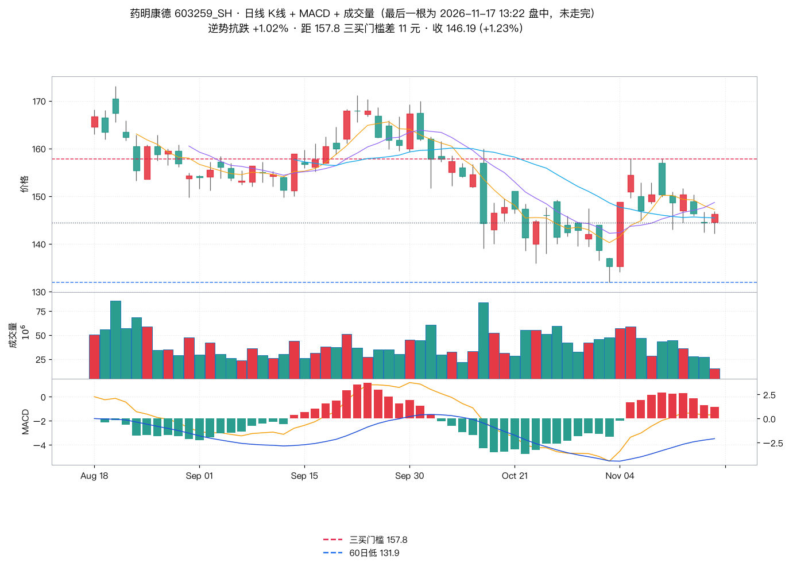
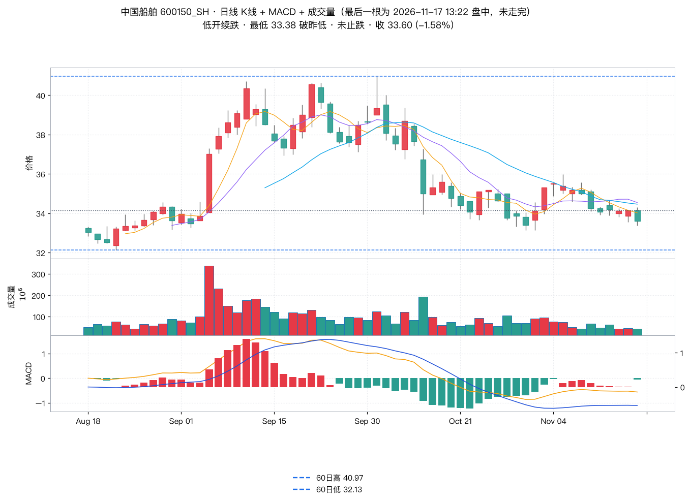
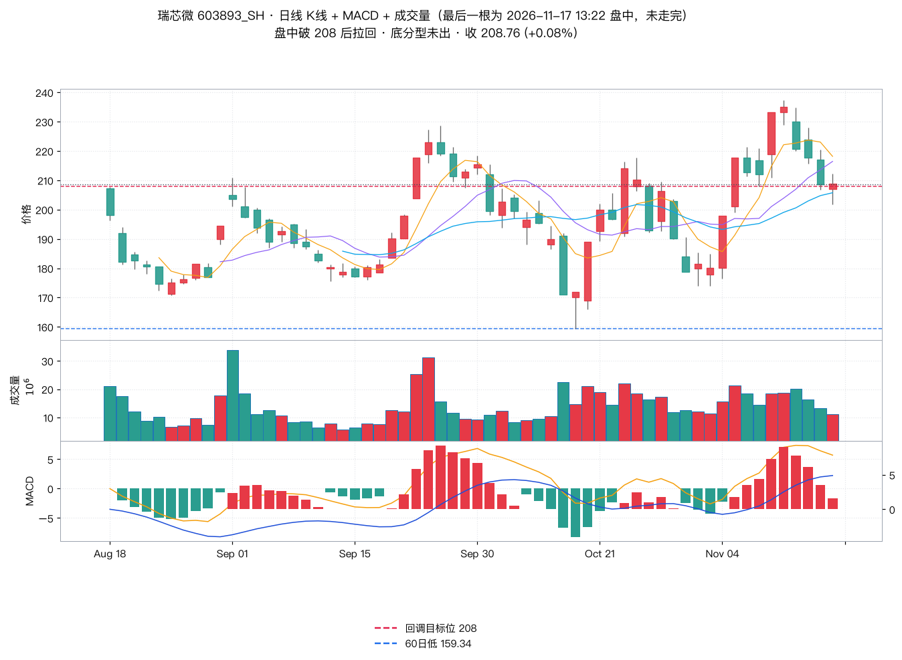
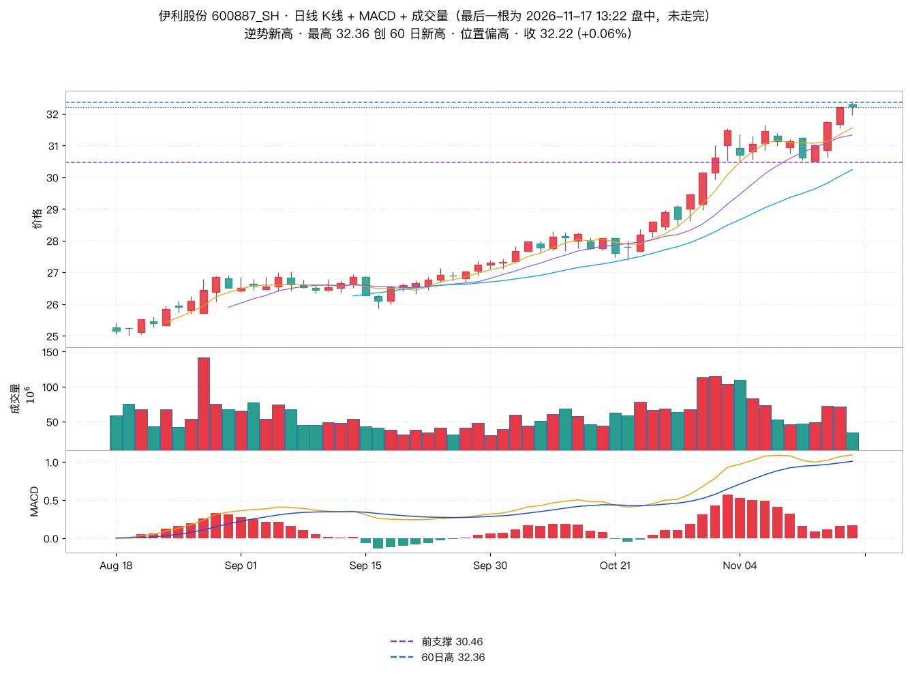
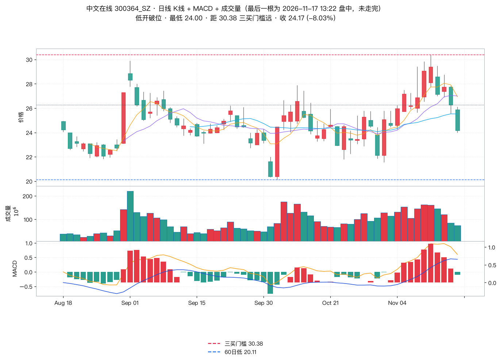
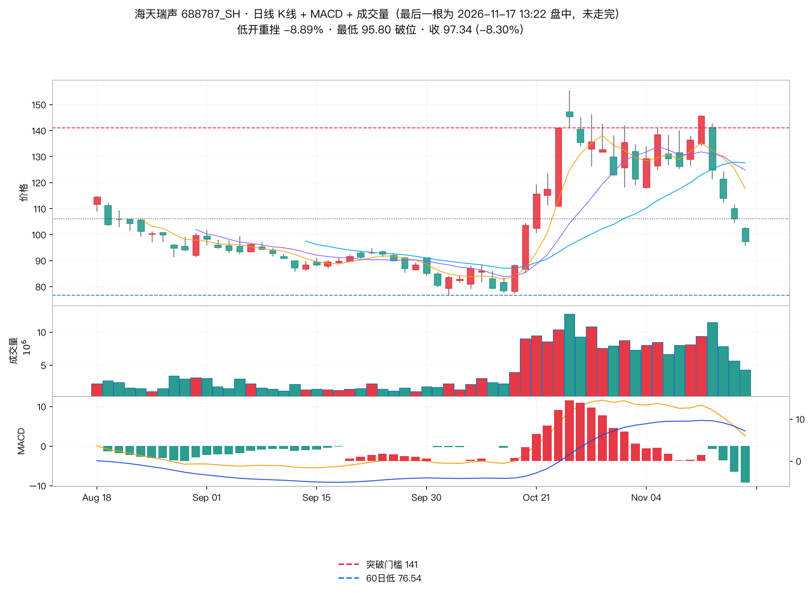
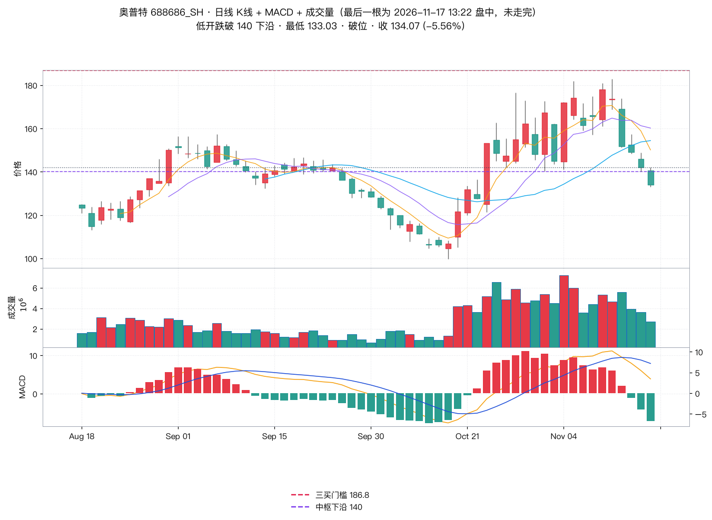
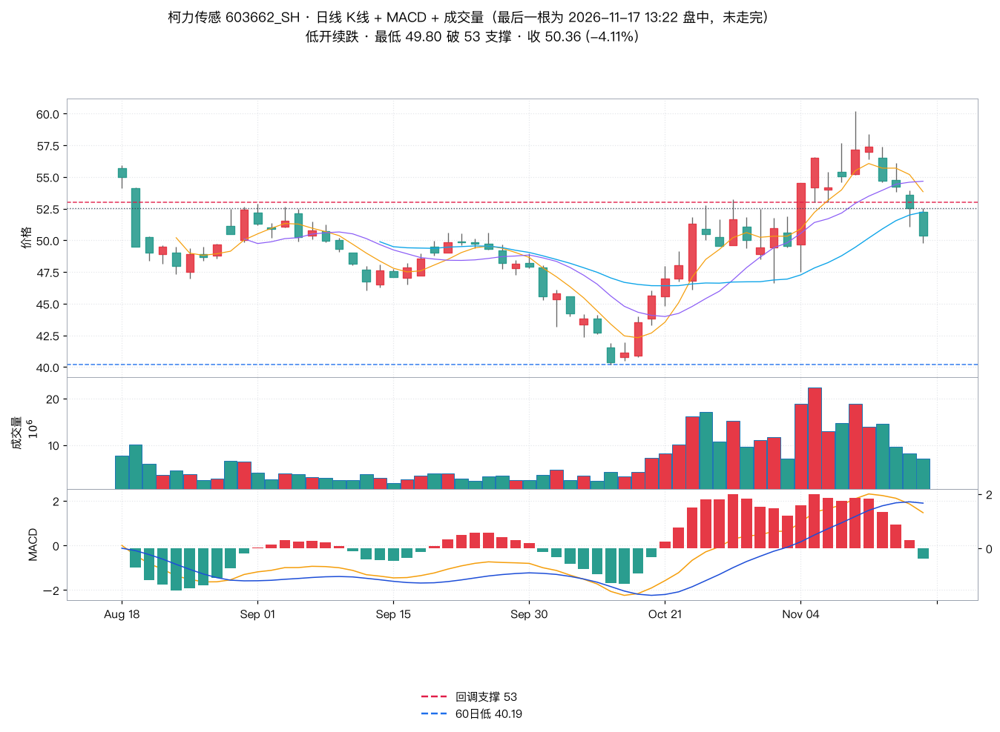
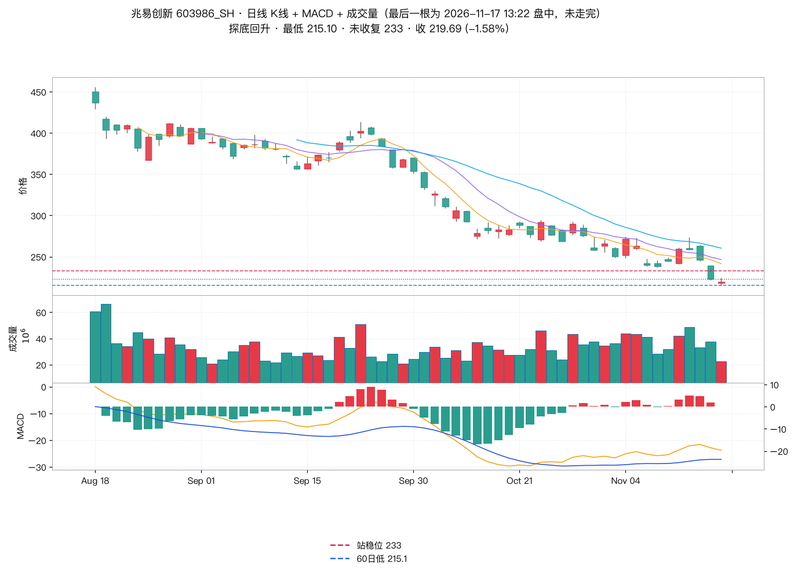
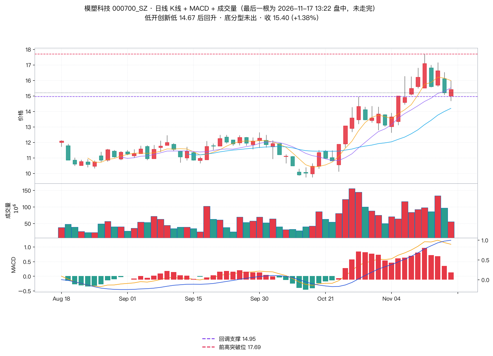
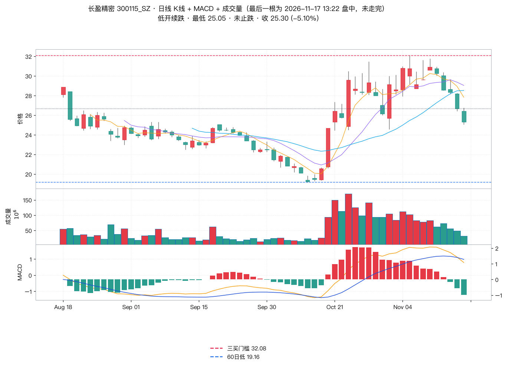
| 老师原文 | 实测 | 判定 |
|---|---|---|
| 老师：「一些防御性品种走出比较温和的震荡上扬」 | 银行 -0.32%（0涨5跌）、电力 -0.39%、煤炭石油 -1.47%；新浪行业涨幅榜首仅 开发区 +0.59% | 未兑现 |
| 老师原文「如果走势无法突破 3263 点」 | 与同段「昨日上午高点 3623」自相矛盾；实测今日最高 3602.07，3623.12 未破（差 21.05 点） | 疑为笔误 |
| 老师：「上证指数盘中创出短期新低」 | 最低 3565.59，跌破 11/16 低 3586.57 并跌破 60 日低 3574.27，幅度大于「短期新低」 | 比表述更弱 |
| 老师：「盘面比较弱」「防御与指数节奏相反」 | 全 A 涨 2879 > 跌 2462（涨停 44、跌停 28），科创50 +2.29%、中证500 +0.88% 逆势，指数弱但个股不弱 | 权重拖累 |
来源：都业华《高级班》2026-11-17 午盘（高级班·午盘），执业编号 A0400626100004。仅供参考，不作为买卖依据，据此操作风险自担。投资有风险，入市需谨慎！
口径：同花顺公开接口日线（140 根）+ 13:22 实时快照（最后一根 K 线未走完、成交量为盘中累计）；板块为自建篮子均值（成分逐一列出）；涨跌家数取新浪全 A 5579 只 13:25 快照；涨停/跌停用东财池；成交额同比取腾讯 5 日分时「同时点 11:30」累计。缠论定性按老师口径引用，不声称我方复算过 15 分钟结构。